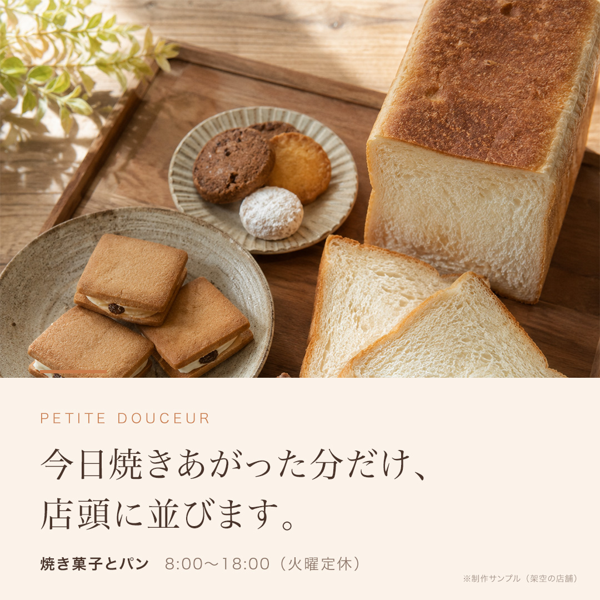
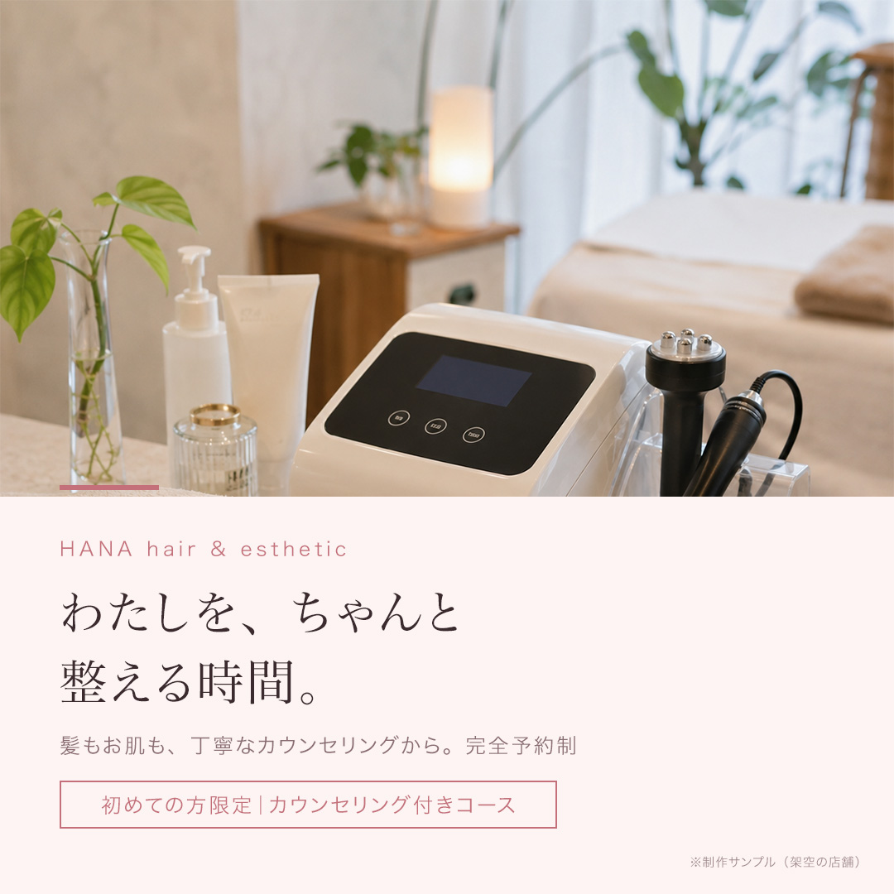
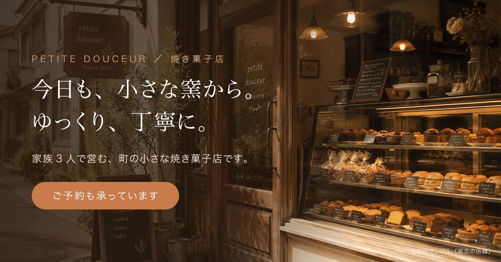
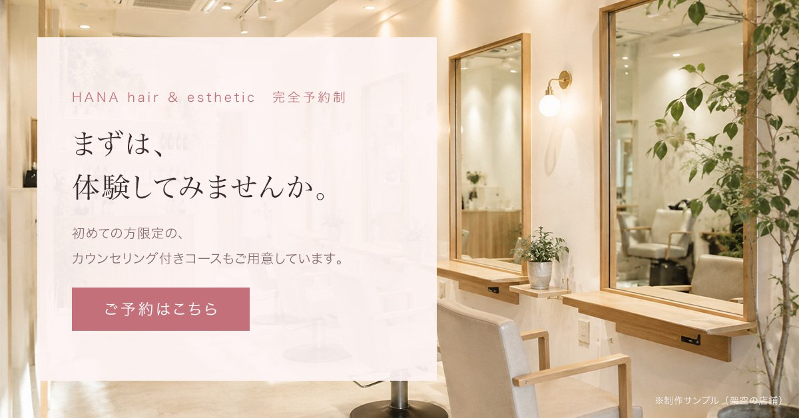

バナーの自主制作サンプルを公開しています。文章と相性のよい、読みやすいデザインを目指して、ページのデザインも少しずつ作品を増やしていきます。
文字の大きさ・余白・色など、読み手に負担をかけない見せ方を学んでいます。
LPやHPに必要なパーツから、制作練習を重ねていきます。
仕上がった作品は、このページに順次載せていきます。
架空のお店を想定して作った、バナーの自主制作サンプルです。実際のお客様の案件ではありません。LPの制作サンプル（ベーカリー・美容サロン）と同じブランドで作っています。
制作ツールは Adobe Photoshop です。文字は編集できるテキストレイヤー、写真はスマートオブジェクトで構成し、レイアウトはスクリプトで組み立てています。写真は、LPのサンプルと同じ画像を使っています。




ご相談は、こちらからどうぞ。「こんなこと頼めるかな」という段階でも大丈夫です。
> CONTACT